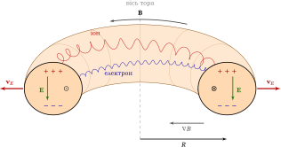
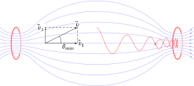
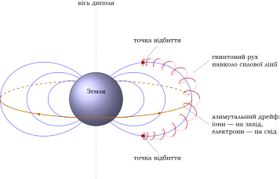

Елементи фізики плазми
3 Рух зарядженої частинки в електричному та магнітному полях
Колективний опис не скасовує руху окремих частинок. Щоб зрозуміти магнітне утримання, спочатку треба побачити найпростішу механіку однієї зарядженої частинки. Вона дає природні просторовий і часовий масштаби \(r_L\) та \(\omega _c^{-1}\), після чого стають зрозумілими дрейфи, магнітне дзеркало і межі застосовності МГД.
§ 3.1 Однорідне магнітне поле
У магнітному полі на частинку з зарядом \(q\) діє сила Лоренца \(\vect F=(q/c)\,\vect v\times \vect B\). Вона перпендикулярна швидкості й роботи не виконує, тому \(v\) зберігається. Розкладемо швидкість \(\vect v=\vect v_\parallel +\vect v_\perp \). Складова \(v_\parallel \) вздовж поля не змінюється, а перпендикулярна складова обертається по колу (це обертання називають гірацією) з циклотронною частотою і ларморівським радіусом
\(\seteqnumber{0}{3.}{0}\)\begin{equation} \label {eq:larmor} \tcbhighmath {\omega _c=\frac {|q|B}{mc},\qquad r_L=\frac {v_\perp }{\omega _c}=\frac {mc\,v_\perp }{|q|B}}. \end{equation}
Траєкторія — гвинтова лінія (рис. 3.1). Іони й електрони обертаються в протилежні боки: якщо дивитися з кінця вектора \(\vect B\), позитивні частинки обертаються за годинниковою стрілкою, негативні — проти. Частота обертання не залежить від енергії частинки. Для практичних оцінок
\(\seteqnumber{0}{3.}{1}\)\begin{equation*} \omega _{ce}\approx 1{,}76\times 10^{7}\,B[\text {Гс}]~\mathrm {с}^{-1},\qquad \omega _{ci}\approx 9{,}58\times 10^{3}\,\frac ZA\,B[\text {Гс}]~\mathrm {с}^{-1}, \end{equation*}
а ларморівські радіуси при \(v_\perp =\sqrt {T/m}\): \(r_{Le}\approx 2{,}4\,\sqrt {T_e[\text {еВ}]}/B[\text {Гс}]\) см, \(r_{Li}\approx 10^2\,\sqrt {A\,T_i[\text {еВ}]}/(Z\,B[\text {Гс}])\) см. Через малу масу електрони мають радіус у \(\sqrt {m_i/m_e}\sim 40\) разів менший за іонний при однакових температурах.
Числова оцінка. Для токамака (\(T=10\) кеВ, \(B=5\times 10^4\) Гс): \(r_{Le}\approx 5\times 10^{-3}\) см, \(r_{Li}\approx 0{,}2\) см (протон), \(0{,}3\) см (дейтрон). Для іоносфери (\(T\approx 0{,}1\) еВ, \(B\approx 0{,}3\) Гс): \(r_{Le}\) від \(2\) до \(3\) см, \(r_{Li}\approx 1\) м для протона і \(\approx 4\) м для O\(^+\) (основний іон F-шару). Тут \(r_L=v_T/\omega _c\), \(v_T=\sqrt {T/m}\).
Плазму називають замагніченою, якщо частинка встигає зробити багато обертів між зіткненнями, \(\omega _c\gg \nu \) (частоту зіткнень \(\nu \) детально розглянуто в розд. 4), і радіус орбіти малий порівняно з розміром неоднорідності поля, \(r_L\ll L\). Довжину вільного пробігу означимо як \(\lambda _{\mathrm {пр}}=v_T/\nu \). Тоді частинка «прив’язана» до силової лінії, і рух поперек поля пригнічений. Оцінимо перенесення. Вздовж поля частинка блукає з кроком \(\lambda _{\mathrm {пр}}\) і \(D_\parallel \sim v^2/\nu \); поперек крок дорівнює \(r_L\), а частота кроків — \(\nu \), тому \(D_\perp \sim r_L^2\nu \). Звідси
\(\seteqnumber{0}{3.}{1}\)\begin{equation*} \frac {D_\perp }{D_\parallel }\sim \left (\frac \nu {\omega _c}\right )^2\ll 1,\qquad D_\perp \propto \frac 1{B^2}. \end{equation*}
Це класична дифузія поперек поля. Вона лежить в основі магнітного утримання: сильне поле різко зменшує поперечні втрати.
§ 3.2 Дрейфи в схрещених полях
Дрейфове наближення. Усю тему можна звести до трьох тверджень. (1) Поля зовнішні й сильні, частинки рухаються незалежно. (2) Якщо \(r_L\ll L\) і \(\omega \ll \omega _c\), рух розпадається на швидке обертання навколо ведучого центру й повільний дрейф самого центру. (3) Загальне правило: будь-яка стала сила \(\vect F\perp \vect B\) викликає дрейф \(\vect v_d=c\,\vect F\times \vect B/(qB^2)\). Якщо \(\vect F\) не залежить від заряду (гравітація, відцентрова сила, \(-\mu \nabla B\)), дрейф має різний знак для електронів та іонів: виникають струм і розділення зарядів. Якщо \(\vect F=q\vect E\), дрейф однаковий для всіх, і плазма рухається як ціле. Це знімає більшу частину труднощів розділу.
Нехай, окрім \(\vect B\), є однорідне електричне поле \(\vect E\perp \vect B\). Шукатимемо рух у вигляді гвинтового руху на фоні дрейфу \(\vect v_d\) із сталою швидкістю. Для швидкості \(\vect v_d\) сила має зникати: \(\vect E+\vect v_d\times \vect B/c=0\). Помножимо векторно на \(\vect B\) і скористаємося \((\vect v_d\times \vect B)\times \vect B=-B^2\vect v_{d\perp }\):
\(\seteqnumber{0}{3.}{1}\)\begin{equation} \label {eq:ExB} \tcbhighmath {\vect v_E=c\,\frac {\vect E\times \vect B}{B^2}}. \end{equation}
Швидкість дрейфу не залежить від заряду, маси та енергії частинки, тому електрони й іони дрейфують в один бік, струму й розділення зарядів нема. Фізичний зміст: у системі відліку, що рухається зі швидкістю \(\vect v_E\), електричного поля немає (нерелятивістське наближення), і частинка просто гвинтом обертається навколо силової лінії.
Чому саме перпендикулярно \(\vect E\). На одному півоберті частинка рухається вздовж \(\vect E\) й прискорюється — радіус орбіти зростає; на іншому — проти \(\vect E\) і гальмується, радіус зменшується. Різниця радіусів зсуває центр орбіти вбік, перпендикулярно \(\vect E\) (траєкторія — трохоїда, а для частинки, що стартує зі спокою, — циклоїда, рис. 3.2). Іон і електрон обертаються в протилежні боки, але й прискорюються полем \(\vect E\) у протилежні боки, тому зсув однаковий: \(\vect E\times \vect B\) «зносить плазму цілком», без струму.
Узагальнення: на частинку діє довільна стала сила \(\vect F\perp \vect B\) (гравітація, відцентрова сила, сила від градієнта тиску). Вона викликає дрейф
\(\seteqnumber{0}{3.}{2}\)\begin{equation} \label {eq:drift-force} \vect v_F=\frac {c}{q}\,\frac {\vect F\times \vect B}{B^2}, \end{equation}
який уже залежить від знака заряду, і призводить до струмів та розділення зарядів. Для \(\vect F=q\vect E\) маємо (3.2).
У неоднорідному полі діють ефективні сили. Усереднена за обертом сила, що виштовхує частинку в область слабшого поля, дорівнює \(-\mu \nabla B\) (див. нижче; \(\mu \) — магнітний момент орбіти), а при русі вздовж викривленої силової лінії з радіусом кривизни \(R_c\) діє відцентрова сила \(mv_\parallel ^2\vect R_c/R_c^2\) (вектор \(\vect R_c\) напрямлений від центра кривизни до частинки). За (3.3) вони породжують градієнтний та відцентровий дрейфи
\(\seteqnumber{0}{3.}{3}\)\begin{equation} \label {eq:gradB-drift} \vect v_{\nabla B}=\frac {c\mu }{qB^2}\,\vect B\times \nabla B,\qquad \vect v_{R}=\frac {mcv_\parallel ^2}{qB^2}\,\frac {\vect R_c\times \vect B}{R_c^2}. \end{equation}
За порядком величини \(v_d\sim cT/(|q|BL)=v_T\,r_L/L\ll v_T\). Умова \(r_L\ll L\) є умовою застосовності дрейфового наближення, а знак швидкості залежить від знака заряду.
Градієнтний дрейф: чому він виникає. У ділянці сильнішого поля радіус орбіти менший (рис. 3.3). Орбіта складається з двох «півкіл»: у слабшому полі — більшого радіуса \(r_1\), у сильнішому — меншого \(r_2\). Тому вона не замикається: за оберт центр зсувається на \(\approx 2(r_1-r_2)\) у напрямку, перпендикулярному і до \(\nabla B\), і до \(\vect B\). Іони й електрони обертаються в протилежні боки, тому зсуваються в протилежних напрямках, і виникає струм \(\vect j_{\nabla B}=n\,(q_i\vect v_{\nabla B,i}+q_e\vect v_{\nabla B,e})\ne 0\).
Дрейф кривизни. Частинка, що рухається вздовж викривленої силової лінії, відчуває відцентрову силу \(\vect F_c\) (рис. 3.4), і згідно з (3.3) дрейфує поперек площини кривизни. Знак швидкості залежить від знака заряду.
Сумарний дрейф у вакуумному полі. У вакуумі (\(\nabla \times \vect B=0\)) модуль поля змінюється на масштабі кривизни. Справді, для поля з круговими силовими лініями у циліндричних координатах \((R,\theta ,z)\) маємо \((\nabla \times \vect B)_z=\dfrac 1R\,\partial _R(RB_\theta )=0\), тобто \(B_\theta =C/R\), і \(\nabla B=-\dfrac {C}{R^2}\hat {\vect R}=-B\,\dfrac {\hat {\vect R}}{R}=-B\,\dfrac {\vect R_c}{R_c^2}\) (тут \(R_c=R\), а \(\vect R_c\) напрямлений від центра кривизни до частинки). Тоді \(\vect B\times \nabla B=B\,(\vect R_c\times \vect B)/R_c^2\), і \(\vect v_{\nabla B}=\dfrac {mcv_\perp ^2}{2qB^2}\dfrac {\vect R_c\times \vect B}{R_c^2}\) має той самий напрям, що й \(\vect v_R\) з (3.4). Обидва дрейфи додаються:
\(\seteqnumber{0}{3.}{4}\)\begin{equation} \label {eq:total-drift} \vect v_d=\frac {mc}{qB^2}\left (v_\parallel ^2+\frac {v_\perp ^2}2\right )\frac {\vect R_c\times \vect B}{R_c^2}. \end{equation}
Саме цей вираз визначає дрейф у тороїдальному полі (розд. 9) і в диполі Землі.
Гравітаційний дрейф. Для сили тяжіння \(\vect F=m\vect g\) з (3.3) одержуємо \(\vect v_g=(mc/qB^2)\,\vect g\times \vect B\). Він залежить від знака заряду й маси, а за величиною \(v_g=g/\omega _c\), тому в лабораторній плазмі мізерний. В екваторіальній іоносфері (іони O\(^+\), \(B\approx 0{,}3\) Гс, \(\omega _{ci}\approx 2\times 10^2\) с\(^{-1}\)) \(v_g\approx 5\) см/с — цього досить, щоб розвинулась гравітаційна (релей-тейлорівська) нестійкість (розд. 8). У викривленому полі роль \(\vect g\) відіграє відцентрове прискорення \(v_\parallel ^2/R_c\).
Числова оцінка. Для протона з \(T=10\) кеВ у тороїдальному полі \(B=5\times 10^4\) Гс на великому радіусі \(R=6\times 10^2\) см середнє значення \(v_\parallel ^2+v_\perp ^2/2=2T/m\), і за (3.5)
\[v_d\approx \frac {2cT}{eBR}\approx 7\times 10^{4}~\text {см/с}.\]
Це лише \(10^{-3}\) від теплової швидкості (\(v_T\sim 10^8\) см/с), але в тороїді з малим радіусом \(a\sim 2\times 10^2\) см частинка досягла б стінки менш ніж за \(10^{-2}\) с, якщо б нічого не заважало дрейфу (розд. 9).
Це головна причина, чому чисто тороїдальне поле не утримує плазму. Дрейфи \(\nabla B\) і кривизни розводять іони вгору, електрони вниз (рис. 3.5); виникає вертикальне електричне поле \(\vect E\), і дрейф \(\vect E\times \vect B\) виносить усю плазму назовні (у бік більшого \(R\)) за час \(\sim a/v_E\). Звідси мотивація обертального перетворення: полоїдальне поле (токамак, стеларатор) закорочує розділення зарядів, бо силова лінія переходить від верху до низу (розд. 9).

§ 3.3 Поляризаційний дрейф
Дрейф у сталому електричному полі є особливим: електрони та іони рухаються в одному напрямку. Якщо ж електричне поле змінюється з часом, інерція частинки створює додатковий дрейф. Виведемо його ітерацією. У нульовому наближенні \(\vect v=\vect v_E=c\,\vect E\times \vect B/B^2\), але \(\vect v_E\) тепер залежить від часу, і прискорення \(d\vect v_E/dt\) вимагає сили. У системі, що рухається з \(\vect v_E\), на частинку діє сила інерції \(\vect F=-m\,d\vect v_E/dt\); підставляючи її в загальне правило (3.3), отримуємо додатковий дрейф \(\vect v_{\rm pol}=\dfrac cq\dfrac {\vect F\times \vect B}{B^2}=-\dfrac {mc}{qB^2}\,\dfrac {d\vect v_E}{dt}\times \vect B\). Оскільки \(d\vect v_E/dt=c\,(\partial _t\vect E\times \vect B)/B^2\) і \((\vect A\times \vect B)\times \vect B=-B^2\vect A_\perp \), маємо \(\vect v_{\rm pol}=\dfrac {mc^2}{qB^2}\,\partial _t\vect E_\perp \). Для повільно змінного поля \(|\partial _t\vect E|\ll \omega _c E\) (щоб ітерація збігалась) остаточно
\(\seteqnumber{0}{3.}{5}\)\begin{equation} \label {eq:polarization-drift} \tcbhighmath { \vect v_{\mathrm {pol}} =\frac {mc^2}{qB^2}\frac {\partial \vect E_\perp }{\partial t} =\frac {q}{|q|}\,\frac {c}{\omega _c B}\frac {\partial \vect E_\perp }{\partial t}. } \end{equation}
На відміну від \(\vect E\times \vect B\)-дрейфу, цей дрейф залежить від знака заряду і маси: іони й електрони дрейфують у протилежні боки, тому виникає поляризаційний струм \(\vect j_{\mathrm {pol}}=\dfrac {\rho _mc^2}{B^2}\,\dfrac {\partial \vect E_\perp }{\partial t}\) (в ньому домінують іони, бо \(\rho _m\approx n m_i\)). Фізично: іон «запізнюється» за полем, поки набирає швидкість \(v_E\). Поперек \(\vect B\) плазма поводиться як діелектрик з проникністю \(\varepsilon _\perp =1+4\pi \rho _mc^2/B^2\gg 1\); звідси швидкість альфвенівських хвиль \(v_A=c/\sqrt {\varepsilon _\perp }\approx B/\sqrt {4\pi \rho _m}\) (розд. 6). Отже, поляризаційний дрейф важливий, коли електричне поле змінюється повільно порівняно з гірообертанням (\(\omega \ll \omega _c\)), але не є строго сталим.
§ 3.4 Магнітний момент і адіабатичний інваріант
Обертання частинки по колу — це кільцевий струм \(I=|q|\omega _c/2\pi \) з площею контуру \(\pi r_L^2\), тобто магнітний момент (у СГС \(\mu =IS/c\))
\(\seteqnumber{0}{3.}{6}\)\begin{equation} \label {eq:mu} \mu =\frac {|q|\omega _c}{2\pi c}\,\pi r_L^2=\frac {mv_\perp ^2}{2B}. \end{equation}
Момент орбіти напрямлений проти поля для частинок обох знаків (вони обертаються в протилежні боки, але заряди теж протилежні; рис. 3.7). Це джерело діамагнетизму плазми (розд. 9).
Теоретичні відомості Нагадаємо з теоретичної механіки
Для періодичного руху з повільно змінним параметром \(\lambda (t)\) (час зміни \(\gg \) період руху) величина \(J=\oint p\,dq\) (дія) адіабатично інваріантна. Приклад: маятник, нитку якого повільно вкорочують; \(J\propto E/\omega =\mathrm {const}\), тож енергія росте разом з частотою. Для ларморівського руху \(\oint (m\vect v+q\vect A/c)\cdot d\vect l\) дає \(2\pi mv_\perp r_L-\pi r_L^2|q|B/c=\pi mv_\perp r_L=(2\pi mc/|q|)\,\mu \), тому \(\mu =\mathrm {const}\). Так само \(J_\parallel =\oint p_\parallel \,ds\) зберігається для руху між точками відбиття, а магнітний потік \(\Phi \) через оболонку дрейфу — для азимутального дрейфу: три інваріанти однієї ідеї.
Якщо поле змінюється повільно (за час обороту \(2\pi /\omega _c\) воно змінюється мало; в просторі це означає \(r_L\ll L\)), величина \(\mu \) зберігається. Це легко побачити, помітивши, що потік поля крізь орбіту \(\Phi =\pi r_L^2B=\pi m^2c^2v_\perp ^2/(q^2B)\propto \mu \). При збільшенні \(B\) виникає вихрове електричне поле, яке прискорює частинку так, щоб потік крізь орбіту залишився сталим (як у надпровідному кільці; рис. 3.8б). Інакше кажучи, \(\mu \) — адіабатичний інваріант (строге обґрунтування — збереження дії \(\oint p\,dq\), див. вставку вище): його відносна зміна за час повільної зміни поля мала за параметром \(\varepsilon \sim r_L/L\sim \omega _c^{-1}/\tau _B\) (де \(\tau _B\) — час зміни поля), а для аналітичних (гладких) полів вона навіть експоненціально мала, \(\Delta \mu /\mu \sim e^{-\mathrm {const}/\varepsilon }\) (Крускал). Інваріантність порушується, коли \(r_L\sim L\) (наприклад, у нейтральному шарі поля чи біля нульової точки), а також за поля, що змінюється з частотою, близькою до \(\omega _c\) (циклотронний резонанс).
Статичне магнітне поле не виконує роботи, тому повна кінетична енергія зберігається. З урахуванням \(\mu =\mathrm {const}\)
\(\seteqnumber{0}{3.}{7}\)\begin{equation} \label {eq:energy-mu} \frac {mv_\parallel ^2}2+\mu B=\mathrm {const}\quad \Rightarrow \quad m\frac {dv_\parallel }{dt}=-\mu \frac {\partial B}{\partial s}, \end{equation}
де \(s\) — координата вздовж силової лінії. У області зростання \(B\) поздовжня швидкість зменшується: енергія переходить від поздовжнього руху до поперечного. Результат — сила \(-\mu \nabla B\), яка штовхає частинку в бік слабшого поля (рис. 3.8).
Вивід сили \(-\mu \nabla B\). Градієнт поперек поля. Нехай \(\vect B=B(x)\hat {\vect z}\), \(B(x)\approx B_0+x\,\partial _xB\). Сила Лоренца вздовж \(x\): \(F_x=(q/c)\,v_yB(x)\). Для положення відносно ведучого центру \(x=x_{\rm gc}+r_L\cos \varphi \) (для \(q>0\) швидкість \(v_x=v_\perp \sin \varphi \), \(v_y=-v_\perp \cos \varphi \)) після усереднення по оберту \(\langle v_y\rangle =0\), \(\langle \cos ^2\varphi \rangle =\tfrac 12\), тому
\[\langle F_x\rangle =\frac qc\,\partial _xB\,\langle v_y\,r_L\cos \varphi \rangle =-\frac {q\,v_\perp r_L}{2c}\,\partial _xB=-\frac {mv_\perp ^2}{2B}\,\partial _xB=-\mu \,\partial _xB\]
(підставлено \(r_L=mcv_\perp /qB\); для \(q<0\) одночасно змінюються знак \(q\) й напрям обертання, результат той самий).
Градієнт уздовж поля. Вісесиметричне поле з \(\nabla \cdot \vect B=0\): \(\dfrac 1r\partial _r(rB_r)=-\partial _zB_z\Rightarrow B_r\approx -\dfrac r2\,\partial _zB_z\). Поздовжню силу дає азимутальна швидкість \(v_\theta =\mp v_\perp \) (для \(q\gtrless 0\)) на радіусі \(r=r_L\): \(F_z=-(q/c)\,v_\theta B_r=-\dfrac {|q|v_\perp r_L}{2c}\,\partial _zB_z=-\mu \,\partial _zB_z\). Разом \(\vect F=-\mu \nabla B\) (збігається з (3.8)).
Діамагнетизм. Ларморівське кільце — це струм, магнітний момент якого напрямлений проти \(\vect B\). Сума моментів кілець дає намагніченість плазми
\[\vect M=-n\langle \mu \rangle \frac {\vect B}{B}=-\frac {p_\perp }{B^2}\,\vect B,\qquad p_\perp =\frac {nm\langle v_\perp ^2\rangle }2,\]
тобто \(\chi <0\): плазма виштовхується з області сильного поля (ідея магнітного утримання Тамма–Сахарова). Застереження: для однорідної рівноважної плазми в обмеженому об’ємі макроскопічний струм намагнічення компенсується струмом частинок, що відбиваються від стінки (теорема Бора — ван Левен). Спостережуваний діамагнетизм зумовлений градієнтом тиску: струм \(\vect j_M=c\nabla \times \vect M\) не зникає там, де \(p_\perp \) змінюється (розд. 5.8).
§ 3.5 Магнітне дзеркало і конус втрат
Розглянемо магнітне поле, слабше в центрі (\(B_{\min }\)) та сильніше на кінцях (\(B_{\max }\)) (рис. 3.10). Нехай у центрі швидкість частинки \(v\) утворює з напрямком поля кут \(\theta \) (пітч-кут), \(v_\perp =v\sin \theta \). Зі збереження \(\mu \) та енергії
\(\seteqnumber{0}{3.}{8}\)\begin{equation*} \frac {v_\perp ^2}{B}=\mathrm {const},\qquad v_\parallel ^2+v_\perp ^2=v^2=\mathrm {const}. \end{equation*}
Поперечна швидкість росте за законом \(v_\perp ^2=v^2\sin ^2\theta \,B/B_{\min }\). Частинка відіб’ється (де \(v_\parallel =0\)), якщо \(v_\perp ^2\) досягне \(v^2\) раніше, ніж частинка досягне області \(B_{\max }\), тобто за умови
\(\seteqnumber{0}{3.}{8}\)\begin{equation} \label {eq:mirror-condition} \tcbhighmath {\sin ^2\theta \geq \frac {B_{\min }}{B_{\max }}}. \end{equation}
Частинки з малим пітч-кутом (\(\sin \theta <\sqrt {B_{\min }/B_{\max }}\)) не відбиваються й вилітають з пастки. Область цих кутів у просторі швидкостей називається конусом втрат. Для ізотропного розподілу швидкостей частка частинок, що потрапляють в обидва конуси втрат, дорівнює
\(\seteqnumber{0}{3.}{9}\)\begin{equation*} 1-\sqrt {1-\frac {B_{\min }}{B_{\max }}}\approx \frac {B_{\min }}{2B_{\max }}\quad (B_{\max }\gg B_{\min }), \end{equation*}
і вона зменшується з ростом пробкового відношення \(B_{\max }/B_{\min }\).
Після виходу частинок із конуса в розподілі лишається «порожній» конус: анізотропія стає джерелом кінетичних нестійкостей (розд. 8).
Принципове зауваження: однорідне магнітне поле не «тримає» частинку вздовж силової лінії. Утримання в дзеркалі виникає завдяки неоднорідності поля й збереженню \(\mu \). Зіткнення, які розсіюють частинки в конус втрат, і нестійкості призводять до того, що відкриті пастки «протікають» (розд. 9). Природним магнітним дзеркалом є поле Землі (розд. 3.7).

§ 3.6 Подовжній інваріант
Якщо частинка захоплена між двома точками відбиття \(s_1\) і \(s_2\), вона здійснює періодичні коливання вздовж силової лінії з частотою відбиття \(\omega _b\sim v_\parallel /L\). Для такого руху існує ще один адіабатичний інваріант — подовжній
\(\seteqnumber{0}{3.}{9}\)\begin{equation} \label {eq:J-invariant} J=\oint m v_\parallel \,ds=2m\int _{s_1}^{s_2}v_\parallel \,ds=\mathrm {const}, \end{equation}
який зберігається, якщо поле змінюється за час, значно більший за період відбиття \(\tau _b=2\pi /\omega _b\). Якщо \(\mu \) пов’язаний з гірацією, то \(J\) — з поздовжніми коливаннями. У статичному осесиметричному полі \(J\) визначає, які силові лінії (дрейфова оболонка) частинка «відвідує» під час дрейфу: частинка завжди повертається на ту саму оболонку. Інакше кажучи, дрейф навколо осі відбувається по замкненій поверхні сталого \(J\).
Фермі-прискорення. Якщо дзеркала зближуються, довжина \(L\) зменшується, і з \(J=\oint v_\parallel \,ds\approx 2v_\parallel L=\mathrm {const}\) маємо \(v_\parallel \propto 1/L\): частинка прискорюється, поки не потрапить у конус втрат. Це один із механізмів прискорення космічних променів (задача 3.5).
Коли поле змінюється з часом, кожен інваріант зберігається, лише поки частота змін \(\omega \) мала порівняно з частотою «свого» періодичного руху. Тому першим (уже за \(\omega \sim \omega _d\), наприклад під час магнітних бур) порушується третій інваріант — магнітний потік \(\Phi \) через оболонку дрейфу; за \(\omega \gtrsim \omega _b\) порушується \(J\); і лише за \(\omega \gtrsim \omega _c\) — найстійкіший інваріант \(\mu \).
§ 3.7 Диполь Землі та радіаційні пояси
Поле Землі в першому наближенні — диполь:
\(\seteqnumber{0}{3.}{10}\)\begin{equation*} B=B_0\left (\frac {R_E}{r}\right )^3\sqrt {1+3\sin ^2\lambda }, \end{equation*}
де \(\lambda \) — магнітна широта, \(B_0\approx 0{,}31\) Гс — поле на екваторі біля поверхні. Силова лінія задається рівнянням \(r=L\,R_E\cos ^2\lambda \), де параметр \(L\) (оболонка Мак-Ілвайна) дорівнює відстані до екватора в радіусах Землі. Поле на екваторі силової лінії \(B_{\rm eq}=B_0/L^3\). На силовій лінії воно зростає до полюсів, тому в диполі працює пастка-дзеркало (рис. 3.11).

Рух захоплених частинок складається з трьох рухів з різними часовими масштабами, з якими пов’язано три адіабатичні інваріанти:
| Рух |
Частота |
Інваріант |
Масштаб (\(E\sim 1\) МеВ, \(L=4\)) |
|
Гірація |
\(\omega _c\) |
\(\mu \) |
\(\sim 10^{-4}\) с |
|
Відбиття між полюсами |
\(\omega _b\) |
\(J\) |
\(\sim 0{,}3\) с |
|
Азимутальний дрейф |
\(\omega _d\) |
потік \(\Phi \) |
\(\sim 10^{3}\) с |
Ієрархія \(\omega _c\gg \omega _b\gg \omega _d\) дозволяє розглядати кожний рух окремо, а отже, визначає глибину адіабатичного наближення. Азимутальний дрейф обумовлений сумою градієнтного й відцентрового дрейфів (3.5); для електрона з поперечною енергією \(W_\perp \) на екваторі \(v_d\simeq 3cW_\perp /(eB_{\rm eq}r)\) (в диполі \(\nabla B/B=3/r\)); електрони дрейфують на схід, а іони — на захід, що створює кільцевий струм навколо Землі. Ця формула справедлива для частинок із пітч-кутом \(90^\circ \) (відбиваються на екваторі); для інших є множник порядку одиниці (усереднення по баунсу).
Числова оцінка. Електрон 30 кеВ на \(L=5\) (\(B_{\rm eq}\approx 2{,}5\times 10^{-3}\) Гс, \(r\approx 3\times 10^{9}\) см): \(v_d\approx 1\times 10^{6}\) см/с, період обходу Землі \(2\pi r/v_d\sim 2\times 10^4\) с (кілька годин). Для протона з енергією \(1\) еВ \(v_d\sim 40\) см/с — дрейфу фактично нема.
Пастка не ідеальна. Частинка, що відбивається в точці з широтою \(\lambda _m\), має на екваторі пітч-кут, що задовольняє
\[\sin ^2\alpha _{\rm eq}=\frac {\cos ^6\lambda _m}{\sqrt {1+3\sin ^2\lambda _m}}.\]
Якщо точка відбиття лежить нижче \(\sim 100\) км над поверхнею, частинка втрачається в щільній атмосфері. Силова лінія \(r=LR_E\cos ^2\lambda \) перетинає поверхню при \(\cos ^2\lambda =1/L\); точка відбиття лежить під поверхнею, якщо \(L\cos ^2\lambda _m\le 1\), тобто \(\cos ^2\lambda _m\le 1/L\) (широта точки відбиття вища за широту виходу лінії з атмосфери). Звідси кут конуса втрат
\(\seteqnumber{0}{3.}{10}\)\begin{equation*} \sin ^2\alpha _c=\frac {L^{-3}}{\sqrt {4-3/L}},\qquad \alpha _c\approx 5^\circ \ (L=4). \end{equation*}
Існування двох поясів (внутрішнього, протонного, і зовнішнього, електронного), відкритих Дж. Ван Алленом у 1958 р., пов’язано з балансом між захопленням (інжекція під час магнітних бур) і втратами (зіткнення з атмосферою, розсіювання хвилями).
§ 3.8 Як це вимірюють: аналізатор енергій і ECE
Гвинтовий рух у магнітному полі дає два прості способи виміряти розподіл частинок.
Аналізатор із гальмівним потенціалом. Сітка під потенціалом \(\varphi \) пропускає лише іони, для яких \(\tfrac 12Mv_\parallel ^2>Ze\varphi \); колектор за сіткою вимірює струм \(I(\varphi )\propto \int _{v_{\min }}^\infty v_\parallel f_\parallel \,dv_\parallel \). Для максвеллівського розподілу \(I\propto \exp (-Ze\varphi /T_i)\), тож \(T_i\) дорівнює оберненому нахилу \(\ln I(\varphi )\), а похідна \(dI/d\varphi \) відтворює саму \(f(v_\parallel )\). Аналізатор вимірює лише швидкості вздовж осі, тому його ставлять уздовж \(\vect B\), щоб відсікти ларморівське обертання.
Електронно-циклотронне випромінювання (англ. electron cyclotron emission; далі скорочено ECE, латинськими літерами, як у літературі).
Електрон обертається з частотою
\(\seteqnumber{0}{3.}{10}\)\begin{equation} \label {eq:ece-frequency} \tcbhighmath {\omega _{ce}=\frac {eB}{m_ec}\approx 1{,}76\times 10^{7}\,B[\text {Гс}]~\mathrm {с}^{-1}} \end{equation}
і випромінює на гармоніках \(n\omega _{ce}\). У токамаку \(B\propto 1/R\), тож кожна частота виходить з певного радіуса: \(R=R_0\,\omega _{ce}(R_0)/\omega \) (для \(n=1\)). Якщо плазма оптично товста на другій гармоніці, інтенсивність дорівнює рівноважній (релеївсько-джинсівській) \(I_\omega =\omega ^2T_e/(8\pi ^3c^2)\) (для однієї поляризації), тобто вимір \(I_\omega \) дає \(T_e(R)\) без зовнішнього джерела.
Числова оцінка. При \(B=5\) Тл \(=5\times 10^4\) Гс: \(\omega _{ce}\approx 8{,}8\times 10^{11}\) с\(^{-1}\), \(f_{ce}\approx 140\) ГГц, друга гармоніка — \(280\) ГГц (мм-діапазон).
Межі застосовності: потрібна оптична товщина (високі \(n_eT_e\)) і відсутність відсічки, \(\omega _{pe}<\omega _{ce}\) (пор. розд. 2.7); релятивістський зсув частоти змішує сигнали сусідніх радіусів.
Головне в розділі
-
• Заряджена частинка в однорідному полі гвинтово рухається: ларморівський радіус \(r_L\) і циклотронна частота \(\omega _c\) залежать від знака заряду лише напрямком обертання.
-
• Дрейф у схрещених \(\vect E\) і \(\vect B\) не залежить від заряду та маси, а градієнтний дрейф і дрейф кривизни залежать від них і розділяють заряди.
-
• Магнітний момент \(\mu \) — адіабатичний інваріант: у повільно змінному полі \(v_\perp ^2/B=\mathrm {const}\).
-
• Магнітне дзеркало відбиває частинки з великим пітч-кутом; решта потрапляє в конус втрат, тож відкрита пастка «протікає».
-
• У диполі Землі діють три інваріанти (\(\mu \), \(J\), \(\Phi \)) з ієрархією частот \(\omega _c\gg \omega _b\gg \omega _d\).
-
• Гальмівний аналізатор дає \(T_i\) з нахилу \(\ln I(\varphi )\), а ECE на частотах \(n\omega _{ce}(R)\) ставить у відповідність частоту й радіус і дає \(T_e(R)\) (розд. 3.8).
Задачі
-
3.1. ★☆☆ Електрон з енергією 100 еВ рухається перпендикулярно полю \(B=10^4\) Гс. Знайдіть ларморівський радіус і порівняйте його з \(\lambda _{De}\) для \(n_e=10^{12}~\mathrm {см}^{-3}\), \(T_e=100\) еВ. [відповідь]
-
3.2. ★☆☆ У схрещених полях \(E=1\) В/см і \(B=10^3\) Гс (в СГС \(1~\text {В/см}=1/300\) СГС) знайдіть швидкість дрейфу. Чи залежить вона від того, чи рухається електрон, чи протон? [відповідь]
-
3.3. ★★★ Електрон з енергією 1 МеВ перебуває на силовій лінії \(L=4\) земного диполя (\(B_{\rm eq}\approx 5\times 10^{-3}\) Гс на екваторі), пітч-кут на екваторі \(\alpha _{\rm eq}=30^\circ \). Оцініть: ларморівський радіус, період обертання навколо силової лінії, час відбиття між дзеркальними точками і період дрейфу навколо Землі. Перевірте ієрархію \(\omega _c\gg \omega _b\gg \omega _d\). [відповідь]
-
3.4. ★★★ Плазма з тисками \(p_\perp \), \(p_\parallel \) перебуває в слабко неоднорідному полі, \(\beta \ll 1\) (так що поле близьке до вакуумного). (а) Знайдіть густину струму \(\nabla B\)- і кривизного дрейфів. (б) Додайте струм намагнічення: густина магнітного моменту \(\vect M=-p_\perp \vect B/B^2\), \(\vect j_M=c\,\nabla \times \vect M\). (в) Покажіть, що для ізотропного тиску \(p_\perp =p_\parallel =p\) повний поперечний струм дорівнює \(\vect j_\perp =c\,\vect B\times \nabla p/B^2\) (діамагнітний). Вказівка: струм дрейфів сам по собі діамагнітного не дає.
-
3.5. ★★★ Протон з енергією \(1\) кеВ і пітч-кутом \(45^\circ \) (у центрі пастки) захоплено між двома магнітними дзеркалами з пробковим відношенням \(R_m=5\), що наближаються одне до одного зі швидкістю \(10\) км/с кожне (початкова відстань \(L=10^{10}\) км). Використайте інваріантність \(J=\oint v_\parallel \,ds\) і пружне відбиття від рухомої стінки: за який час частинка потрапить у конус втрат і якою буде її енергія? [відповідь]
-
3.6. ★★☆ У магнітній пастці \(B_{\min }=2\times 10^4\) Гс, \(B_{\max }=8\times 10^4\) Гс. Знайдіть критичний пітч-кут конуса втрат і частку частинок ізотропного розподілу, що потрапляють у конуси втрат. [відповідь]
-
3.7. ★☆☆ Для іонного двигуна потрібен дрейф \(v_E=1000\) км/с у полі \(B=1\) Тл. Яке електричне поле для цього потрібне? Виразіть відповідь у СГС (де \(B=10^4\) Гс) і у В/см. Чи залежить результат від сорту іонів? [відповідь]
-
3.8. ★★☆ Плазмовий стовп радіуса \(a=10\) см у полі \(B=1\) кГс має параболічний потенціал \(\varphi (r)=\varphi _0\,r^2/a^2\) відносно осі, \(\varphi _0=1\) кВ. Знайдіть кутову швидкість \(\mathrm E\times \mathrm B\)-обертання \(\omega =cE_r/(Br)\). Чому стовп обертається як тверде тіло? [відповідь]
-
3.9. ★★☆ Електрон з енергією 1 кеВ у токамаку з \(R=1\) м, \(B=1\) Тл. Оцініть швидкість тороїдального дрейфу \(v_d\simeq v^2/(\omega _c R)\) і час, за який електрон без обертального перетворення досяг би стінки на відстані \(0{,}3\) м. Як цей результат пояснює необхідність полоїдальної складової поля? [відповідь]
-
3.10. ★★☆ У токамаку \(R_0=1{,}65\) м, \(B(R_0)=5\) Тл. На якому радіусі ECE-приймач, налаштований на другу гармоніку \(252\) ГГц, бачить плазму? Куди зсунеться ця точка, якщо \(B(R_0)\) зросте на 10 %? [відповідь]
-
3.11. ★★☆ Струм колектора гальмівного аналізатора спадає в \(e\) разів при зростанні потенціалу сітки на \(20\) В. Знайдіть \(T_i\) однозарядних іонів. [відповідь]
-
3.12. ★★★ Комп’ютерне завдання. Проінтегруйте чисельно рівняння руху частинки в полях \(\vect E\) і \(\vect B\) методом Боріса (на кроці \(\Delta t\ll \omega _c^{-1}\) половинне прискорення від \(\vect E\), поворот у \(\vect B\), друге половинне прискорення). Перевірте чисельно: (а) \(\vect E\times \vect B\)-дрейф \(v_E=cE/B\) для електрона й протона; (б) градієнтний дрейф у полі \(B(x)=B_0(1+x/L)\) і його знак залежно від заряду; (в) збереження \(\mu =mv_\perp ^2/2B\) у пробкотроні.
Контрольні питання
-
1. Які фізичні величини визначають ларморівський радіус і циклотронну частоту? Чому іони й електрони обертаються в протилежні боки?
-
2. Чому дрейф у схрещених \(\vect E\) і \(\vect B\) не залежить від заряду та маси, а градієнтний дрейф залежить?
-
3. Що таке магнітний момент частинки? Чому він є адіабатичним інваріантом? Коли порушується?
-
4. Як працює магнітне дзеркало? Що таке конус втрат? Чому зіткнення призводять до «протікання» відкритих пасток?
-
5. Чому градієнтний дрейф і дрейф кривизни в вакуумному полі додаються? Від чого залежить напрям дрейфу?
-
6. Які три адіабатичні інваріанти характеризують рух у диполі Землі? Як вони співвідносяться за частотами?
-
7. Чому за ECE можна локалізувати вимір \(T_e\) у токамаку? Що обмежує метод?
-
8. Чому чисто тороїдальне магнітне поле не утримує плазму? Яку роль відіграє полоїдальна складова?